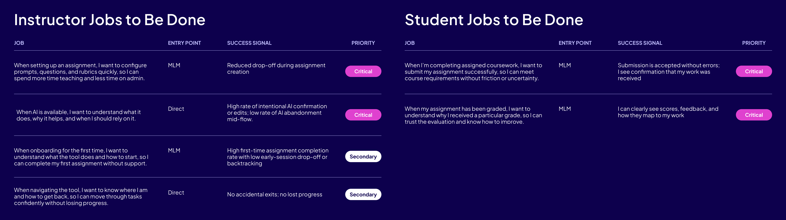
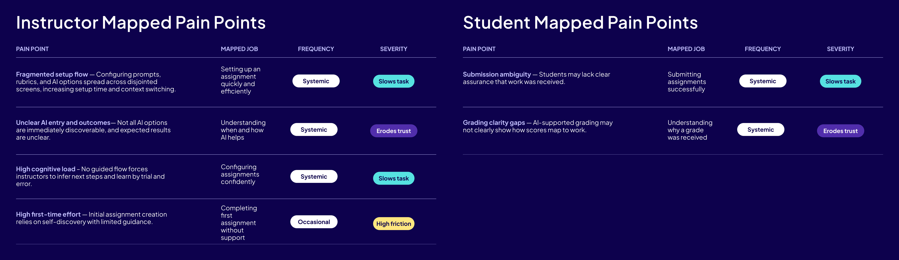
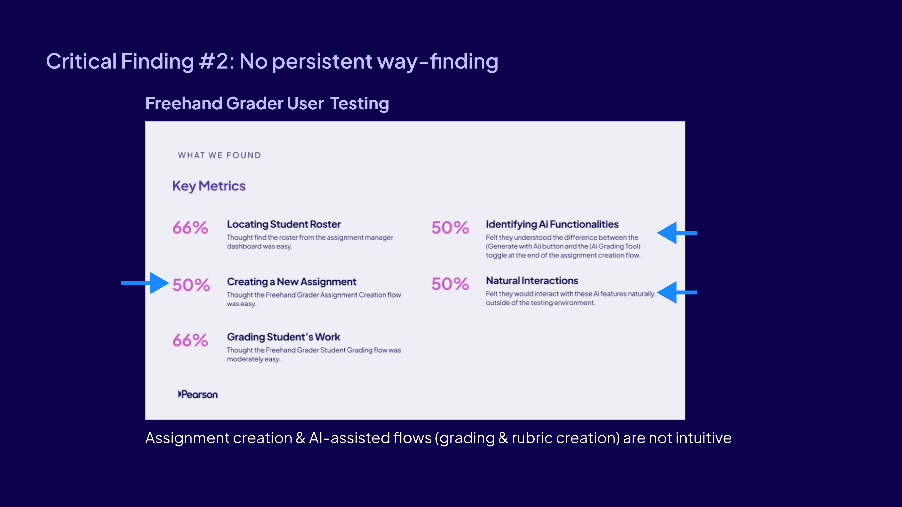

UX AUDIT/Pearson Higher Ed · "Generate" portfolio/March 2026
Surfacing friction across Pearson's AI grading and assignment tools.
I ran a cross-product UX audit across two products in Pearson's Higher Ed "Generate" portfolio, which gave product, engineering, and design a shared reference for deciding what to fix first.
RoleLead designer
TimelineMarch 2026
Scope2 products · instructor + student flows
OutcomeInformed two v1 redesigns + ongoing roadmap
01Impact
Drove two first-pass redesigns
Every short-term recommendation translated into concrete design changes in the v1 redesigns of Writing Solutions and Freehand Grader.
Reframed the problem cross-functionally
Connected the surfaced issues to business risks and ranked them by severity, turning a scattered list of complaints into a clear, defensible diagnosis the team could rally around.
Anchored roadmap planning
Long-term recommendations continue to be referenced as the squad scopes future quarters and weighs feature priorities against structural debt.
Surfaced value of investing in a mobile experience
Made the case for mobile, where key actions happen yet 82–85% of LMS-based users are effectively blocked.
Presented to cross-functional leadership across product, engineering, and design in March 2026; findings continue to be referenced in roadmap planning.
02Overview
Generate is a suite of digital tools for assigning and grading authentic assessments in higher education. Authentic assessments are valued for real-world relevance but time-intensive to set up and grade, so Generate's value prop is leveraging AI to save instructor time and enable authentic assessments at scale.
I audited two tools in the suite: Writing Solutions (for writing submissions) and Freehand Grader (for handwritten, uploaded solutions, usually STEM-related). Both share a mission to save instructors time while preserving pedagogical rigor and instructor judgment.
Despite impressive features, instructors were hesitating, abandoning flows, or taking longer than expected on core tasks. This friction directly undermines the time-savings value prop. I approached the audit as a strategic diagnostic of how product structure, system constraints, and legacy UI decisions were eroding instructor trust and efficiency.
Audit slide: Usage data from Pendo dashboards.
03Method
I grounded the review in three lenses, prioritizing the instructor experience given its greater complexity and business impact.
01
Jobs-to-be-done
Mapped instructor and student JTBDs to surface the gap between what the product was built to deliver and what users showed up to accomplish.
02 · Evidence
UX teardown
Screen-level heuristic review across five areas: interactions & patterns, information hierarchy, content & organization, navigation, and visual design.
03 · Evidence
Funnel & abandonment data
Cross-referenced findings with Pendo dashboards to confirm where users dropped off, matching qualitative friction to quantitative attrition.

Jobs-to-be-done for instructors and students, each mapped to its entry point, success signal, and priority.

Pain points for instructors and students, each tied back to a job with frequency and severity.UX teardown of core instructor & student workflows, annotated issues across navigation, visual design, and help & documentation.
Core flows for assignment creation and grading mapped for Writing SolutionsCore flows for assignment creation and grading mapped for Freehand Grader
04Key Insights
01
Information architecture
The experience is organized around tools, not tasks.
Different backend services each assert themselves visually, producing competing headers, redundant containers, and fragmented attention. Instructors don't think in terms of products or systems; they think "I need to create an assignment" or "I need to finish grading". The experience often failed to support that mental model.
Critical Finding #1: IA & Hierarchy, showing how three backend systems (XL/OV, FG, LASS) layer visually inside a single instructor task.
Systems referenced
OV
The shell / container application that hosts learning experiences.
XL
The legacy web application that runs courseware.
LASS
Set of shared backend / service-level capabilities that have fixed UI components, which I could not modify (at least in the short term).
02
Wayfinding & state
Wayfinding and state break down when confidence matters most.
Many core workflows are multi-step and consequential, yet lack clear progress indicators, visible completion states, awareness of what's next, and safe ways to revise earlier decisions.
This forces instructors to commit early, especially around AI extraction and grading, without enough context to feel confident. In short, complexity was front-loaded instead of progressively revealed: instructors faced high-stakes choices before the flow gave them the context to make them. The funnel data confirms this: the largest drop sits exactly at the moment users are asked to commit without preview.

Critical Finding #2: No persistent wayfinding, Freehand Grader user testing showed assignment creation and AI-assisted flows (grading & rubric creation) were not intuitive.
03
AI framing
AI is framed as a risky fork, not a helpful partner.
AI capabilities are positioned as branching paths: AI vs. non-AI. That framing amplifies fear of choosing wrong, makes AI feel irreversible rather than assistive, and turns grading into a high-stakes configuration problem.
Instructors don't want to choose an AI workflow. They want to grade, with AI available where it's helpful.
Recommendation slide: re-frame AI as an in-context assist, not a branching path.
04
Polish & recovery
Small inefficiencies undermine the value proposition.
Editing layouts for questions and rubrics are constrained, in-context guidance is sparse, error messages explain what went wrong without showing how to recover, and small visual inconsistencies erode perceived quality. Each issue is minor on its own, but together they contradict the product's core promise of saving time.
Instructors came to grade. AI should show up where it helps, not ask them to pick a workflow first.
05Business risks
Left unaddressed, the friction surfaced above translates into concrete business exposure across four areas.
Adoption risk
Usage data shows instructors are starting tasks but not completing them, signaling friction that directly threatens adoption.
Support burden
Sparse in-context guidance and unclear error states are likely driving unnecessary support requests.
Eroded trust
Visual inconsistency and poor hierarchy erode confidence in the product, particularly for first-time users.
Revenue
Inefficiency is especially damaging for Freehand Grader and Writing Solutions, where instructor time-savings is a core value proposition.
06Recommendations
Now · Q2–Q3
Quick wins
01
Introduce task-level navigation, a stepper or breadcrumbs aligned to assignment creation and grading, not to backend service boundaries.
02
Make state visible, progress, completion, and system readiness should each have a dedicated, persistent UI affordance.
03
Scaffold key decisions with clearer context, especially around AI and rubrics. Replace branching forks with progressive disclosure.
04
Strengthen in-context help and error recovery, explain what to do next, not just what went wrong.
Long term · 2026–2027
Structural moves
01
Use the EOY platform modernization, including iFrame removal and design system rollout, as the seam to realign the experience.
02
Design toward a unified Generate workflow across Freehand Grader, Writing Solutions, and MediaShare. Anchor in instructor tasks, not product lines.
03
Treat AI as ambient, not branching, surface AI capabilities inline at the moment of need, with manual override always available.
04
Open the mobile conversation, 82–85% of customers enter through an LMS with no mobile support, yet mobile is where key actions happen, and a mobile-first take would fix existing IA issues. A strategic adoption lever the team hadn't sized.
07Next steps
The audit findings directly influenced design decisions made in subsequent design iterations for Writing Solutions and Freehand Grader, and continue to be referenced for roadmap planning.